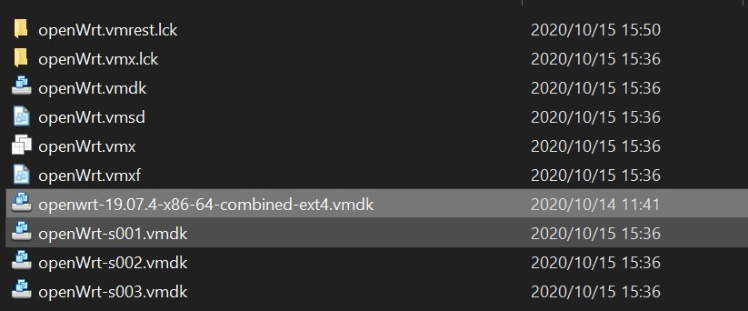
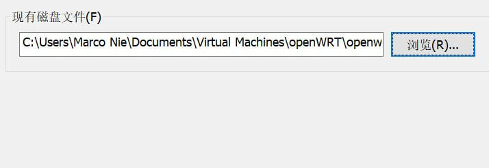
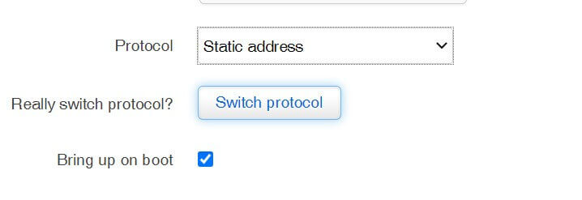

openwrt 的安装与配置
openWrt 是专门为嵌入式设备设计的 Linux 系统，常用来作为软路由系统使用。LEDE 和 openWrt 已经合并到一起。
最近研究软路由，所以先使用 VMware 虚拟机安装测试 openWrt，由于 VMware 只能识别 vmdk 格式的虚拟磁盘镜像，而官网下载的是 img 镜像，所以需要进行格式转换。
固件下载及转换
openWrt 固件也是区分不同硬件平台的，需要根据硬件情况下载对应的系统镜像。
官方固件下载地址：https://downloads.openwrt.org/
目前最新的版本是 19.07.4，我电脑是 x86 平台 64位系统需下载 x86_64 固件，进入列表下载 combined-ext4.img.gz 到本地:
将下载的压缩包解压出 img 镜像文件。由于我是虚拟机安装，所以需要将下载的 img 镜像转换为 VMware 的虚拟硬盘格式：.vmdk，最方便的是使用 Linux 工具 qemu-img 来完成，这里我是用 wsl 子系统来处理：
apt install qemu qemu-utils
qemu-img convert -f raw -O vmdk openwrt-19.07.4-x86-64-combined-ext4.img openwrt-19.07.4-x86-64-combined-ext4.vmdk完成后得到 vmdk 文件。
建立虚拟机
新建虚拟机，选择自定义模式：
硬件兼容选择最新的即可：
然后选择稍后安装操作系统：
系统选择 Linux 系统，19.07 版本是 4.14 内核，我下载的是 64 位固件，所以选择其他 Linux 4.x内核，64位：
虚拟机名称自己定义：
处理器默认即可：
内存分配1G：
剩下的全部默认确定即可，虚拟机初步建立完成。
下一步开始配置虚拟网卡用来分配给 openwrt 的 lan 内网网卡，点击编辑 - 虚拟网络编辑器：
点击右下角更改设置：
点击添加网络：
选择一个可用的网络点击确定，我选择 vnet2：
选择仅主机模式，由于 openwrt 自带 DHCP 控制所以这里取消勾选 DHCP 服务：
点击确认，完成虚拟网卡的建立，我实际建立的子网 IP 段是 192.168.244.0，子网掩码 255.255.255.0。
下面编辑刚才建立的虚拟机，点击编辑虚拟机设置：
移除不需要的硬件，包括硬盘，保留网络适配器。快捷键 alt + R：
将上面转换的 vmdk 文件拷贝到此虚拟机文件夹：

点击添加硬件：
选择硬盘，点击下一步：
选择使用现有虚拟磁盘：
选择刚才复制到目录的 vmdk 文件，点击完成：

选择转换：
再次添加一个网络适配器：
这里我们有了两个网络适配器，第一个分配给 lan 第二个分配给 wan，注意顺序，openWrt 默认识别第一个网卡为 lan。后期进入系统后也可以修改网卡顺序。
第一个网卡 lan 设置为我们刚才建立的虚拟网卡 vnet2，用来给 openWrt 路由的内网使用：
第二个网卡 wan 设置为桥接模式，用来连接物理外网：
确认后启动虚拟机，等待进入进入系统。进入系统后可以设置一个快照方便以后恢复。
网络配置
进入系统后，我们需要设置 lan 的 IP 地址为我们创建的虚拟网卡所在的 IP 段，就能从主机访问 openwrt 了。
首先通过 ip l 命令查看当前安装的网卡名称：
1: lo: <LOOPBACK,UP,LOWER_UP> mtu 65536 qdisc noqueue state UNKNOWN qlen 1000
link/loopback 00:00:00:00:00:00 brd 00:00:00:00:00:00
2: eth0: <BROADCAST,MULTICAST,UP,LOWER_UP> mtu 1500 qdisc fq_codel state UP qlen 1000
link/ether 00:0c:29:c5:39:8d brd ff:ff:ff:ff:ff:ff
3: eth1: <BROADCAST,MULTICAST,UP,LOWER_UP> mtu 1500 qdisc fq_codel state UP qlen 1000
link/ether 00:0c:29:c5:39:97 brd ff:ff:ff:ff:ff:ff可以看到除了 lo 本地网络外，有两个网卡 eth0 和 eth1，分别对应第一个网卡和第二个网卡。
下面我们编辑 /etc/config/network 配置文件,这里我们需要修改 lan 段里的 ipaddr 地址为虚拟网卡网段。我们这里修改为 192.168.244.1:
config interface 'loopback'
option ifname 'lo'
option proto 'static'
option ipaddr '127.0.0.1'
option netmask '255.0.0.0'
config globals 'globals'
option ula_prefix 'fd97:e395:55b0::/48'
config interface 'lan'
option type 'bridge'
option ifname 'eth0'
option proto 'static'
option ipaddr '192.168.244.1'
option netmask '255.255.255.0'
option ip6assign '60'
config interface 'wan'
option ifname 'eth1'
option proto 'dhcp'
config interface 'wan6'
option ifname 'eth1'
option proto 'dhcpv6'修改完成后重启 network 服务即可生效：
/etc/init.d/network restart
重启完成后使用 ip addr 查看系统网络配置，可以看到 wan 口 eth1 分配到主机网络所在局域网 IP 地址，lan 口 eth0 是虚拟网卡 IP 地址：
1: lo: <LOOPBACK,UP,LOWER_UP> mtu 65536 qdisc noqueue state UNKNOWN qlen 1000
link/loopback 00:00:00:00:00:00 brd 00:00:00:00:00:00
inet 127.0.0.1/8 scope host lo
valid_lft forever preferred_lft forever
inet6 ::1/128 scope host
valid_lft forever preferred_lft forever
2: eth0: <BROADCAST,MULTICAST,UP,LOWER_UP> mtu 1500 qdisc fq_codel master br-lan state UP qlen 1000
link/ether 00:0c:29:c5:39:8d brd ff:ff:ff:ff:ff:ff
3: eth1: <BROADCAST,MULTICAST,UP,LOWER_UP> mtu 1500 qdisc fq_codel state UP qlen 1000
link/ether 00:0c:29:c5:39:97 brd ff:ff:ff:ff:ff:ff
inet 192.168.116.129/24 brd 192.168.116.255 scope global eth1
valid_lft forever preferred_lft forever
inet6 fe80::20c:29ff:fec5:3997/64 scope link
valid_lft forever preferred_lft forever
5: br-lan: <BROADCAST,MULTICAST,UP,LOWER_UP> mtu 1500 qdisc noqueue state UP qlen 1000
link/ether 00:0c:29:c5:39:8d brd ff:ff:ff:ff:ff:ff
inet 192.168.244.1/24 brd 192.168.244.255 scope global br-lan
valid_lft forever preferred_lft forever
inet6 fd97:e395:55b0::1/60 scope global
valid_lft forever preferred_lft forever
inet6 fe80::20c:29ff:fec5:398d/64 scope link
valid_lft forever preferred_lft forever使用 ping 查看是否可以连接外网,如果无法 ping 通，则需要检查配置问题。
主机网络适配器里找到 vmware vnet 2 虚拟网卡：
查看信息，ip 地址是否正确，注意如果 openwrt 里的 IP 设置为了 192.168.244.1，则这里的IPv4 地址就需要修改为 192.168.244.2 或其他地址不然就冲突了，网关设置为 192.168.244.1 指向 openwrt 路由器。
这时候使用主机访问 192.168.244.1 应该就可以进入 LuCl 界面了：
默认没有密码，可以使用 passwd 设置登录密码。
我们先给 openWrt 设置一个静态 wan 口 Ip，这样局域网设备就可以方便访问了。点击 network - interface：
wan 口配置点击 edit：
protocol 选择 static address，点击 switch protocol：

设置本地局域网内的 IP 地址，网关地址和 DNS 地址，点击保存：
点击 save：
更换国内源
由于虚拟机内不方便复制粘贴文本，我们使用 ssh 连接虚拟机：
类似于 Debian，openWrt 也有包管理系统 opkg。默认都是国外源地址访问比较慢，可以替换为国内镜像地址，这里使用清华园镜像：https://mirrors.tuna.tsinghua.edu.cn/help/openwrt/
列表路径是：/etc/opkg/，有两个 conf 文件：distfeeds.conf, customfeeds.conf
一键替换命令：
sed -i 's_downloads.openwrt.org_mirrors.tuna.tsinghua.edu.cn/openwrt_' /etc/opkg/distfeeds.conf
更新列表：
opkg update
安装常用工具：
opkg install sudo bash git-http vim-full curl ca-certificates openssl-util ca-bundle libopenssl luci-ssl-openssl lsof wget ipset luci-i18n-base-zh-cn
虚拟机下可以安装 vmtools 来开启虚拟机管理等功能：
opkg install open-vm-tools
如果需要进行透明代理，需要安装 iptables 和 tproxy 扩展：
opkg install iptables iptables-mod-tproxy iptables-mod-extra iptables-nft iptables-mod-socket libcap
iptables 的操作教程参考：https://blog.niekun.net/archives/1872.html
透明代理建议同时打开linux ipv4封包转发：
sysctl -w net.ipv4.ip_forward=1
透明代理建议修改进程 Socket 句柄数：https://blog.niekun.net/archives/2572.html
需要 sftp 连接系统的话需要安装支持包：
opkg install openssh-sftp-server
如果安装了 openssh-sftp-server 就会在网络上声明此 sftp 服务的存在。
如果需要打开网络发现，这样其他设备就可以主动找到此服务器，可以安装扩展：
opkg install announce
自带的 dnsmasq 是精简版的不支持一些高级语法，可以参考我的文章升级为 dnsmasq-full：https://blog.niekun.net/archives/1869.html
如果从网络上直接下载 ipk 包，安装命令：
opkg install test.ipk
使用第三方源
使用第三方源步骤：
- 添加 第三方源 key 文件
- 源仓库地址加入
/etc/opkg/customfeeds.conf文件 - opkg update
源仓库地址格式：
src/gz example_feed_name http://www.example.com/path/to/files
示例，加入第三方开发者 kuoruan 的源：
添加 key：
wget -O kuoruan-public.key http://openwrt.kuoruan.net/packages/public.key
opkg-key add kuoruan-public.key添加仓库地址到配置文件：
echo "src/gz kuoruan_packages http://openwrt.kuoruan.net/packages/releases/$(. /etc/openwrt_release ; echo $DISTRIB_ARCH)" \
>> /etc/opkg/customfeeds.conf
opkg update然后就可以安装第三方库的软件了，例如：
opkg install v2ray-core
更新软件包
查看可更新包：
opkg list-upgradable
更新某个包：
opkg upgrade xxx
一键更新所有可更新的包：
opkg update && opkg list-upgradable | awk '{print $1}' | xargs -r opkg upgrade
一键更新软件脚本：https://github.com/tavinus/opkg-upgrade
外网访问
默认设置下，openwrt 会禁止 wan 网络对主机的 INPUT 和 FORWARD 流量，只会转发信息给其他设备。这样是为了安全因素。
如果需要通过 wan 口的网络访问 luci 管理页面，或者远程 ssh 访问 openwrt，就需要打开防火墙设置。如果要彻底关闭防火墙，可以进入 network - firewall - general settings，编辑下面的 zone 中的 wan 设置：
将 input，output，forward 都设置为 accept：
这样就会完全开放网络的访问，也可以根据需要只开放指定的端口或服务。
这样就可以通过 wan 口访问 openwrt 本地服务了。但是为了安全期间，请设置强度高的 root 密码。
如果需要通过 frp 配置内网穿透访问 luci 页面，需要配置 uhttpd 并且取消强制 http 重定向 https，或者使用 frpc 的 plugin_http2https 插件。
具体参考：
openwrt 配置 LuCI ssl 证书
使用 frp 实现内网穿透/远程管理/文件服务器
参考链接：
https://openwrt.org/docs/guide-user/virtualization/vmware
https://github.com/kuoruan/luci-app-v2ray
标签：无